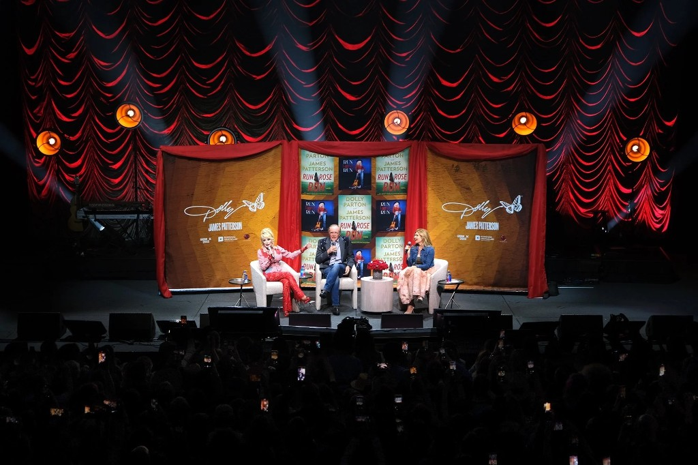
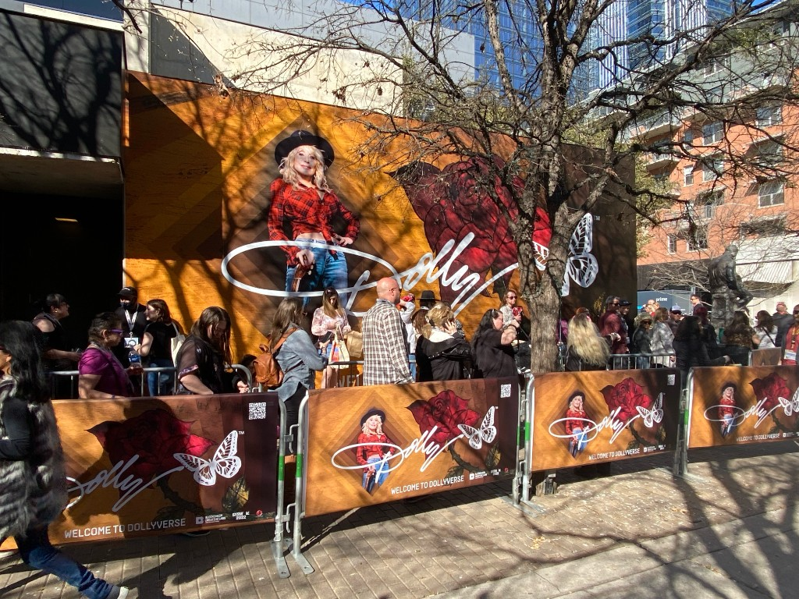
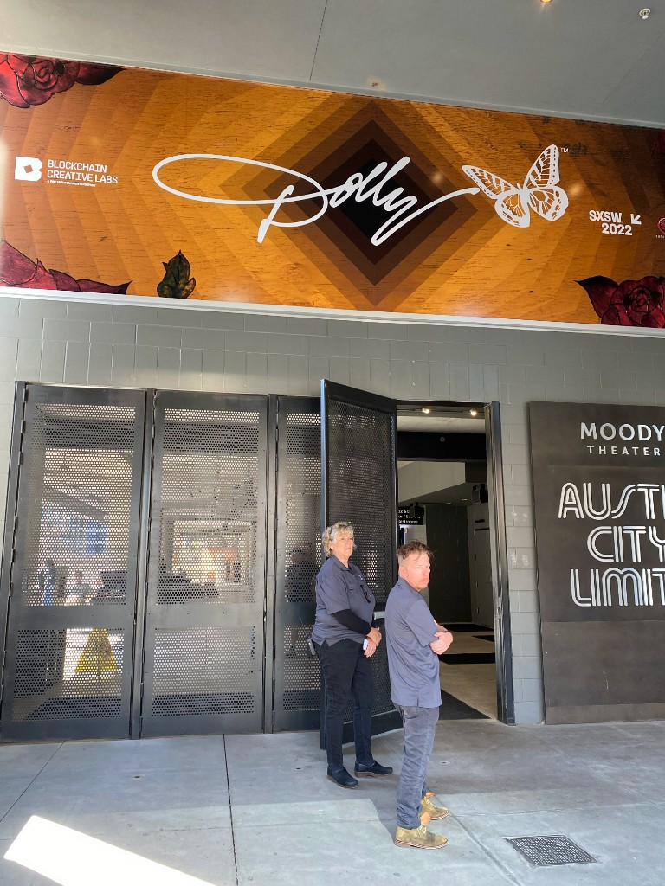
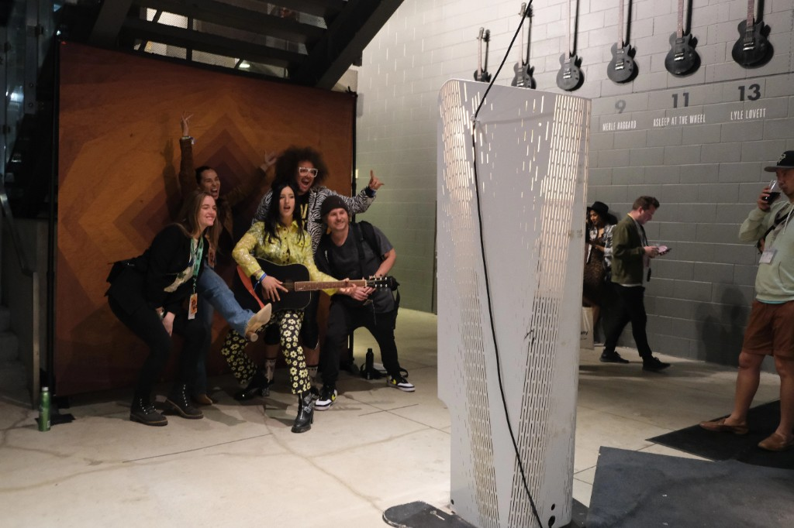
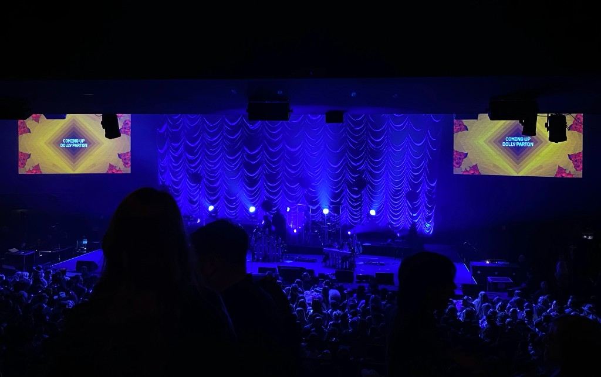

Event Design
Welcome
to the Dollyverse
For Dolly Parton’s first-ever SXSW appearance, “Welcome to the Dollyverse” brought her unmistakable world into a new digital frontier. I joined the KUDOS Design Collaboratory team as a designer, helping bring Dolly’s identity and Blockchain Creative Labs together across the live experience.

The Work
The challenge was bringing two very different worlds together: Dolly’s established identity and BCL’s introduction to Web3. Working within the team’s creative direction, I contributed to the graphic design for an experience spanning logos, billboards, badges, signage, and photo moments. Together, those touchpoints carried the collaboration from its visual identity into the physical event.
The evening paired a conversation between Dolly and James Patterson with a live performance celebrating Run, Rose, Run. A free livestream and digital collectibles extended the experience beyond Austin—connecting the in-person audience with fans watching online.



